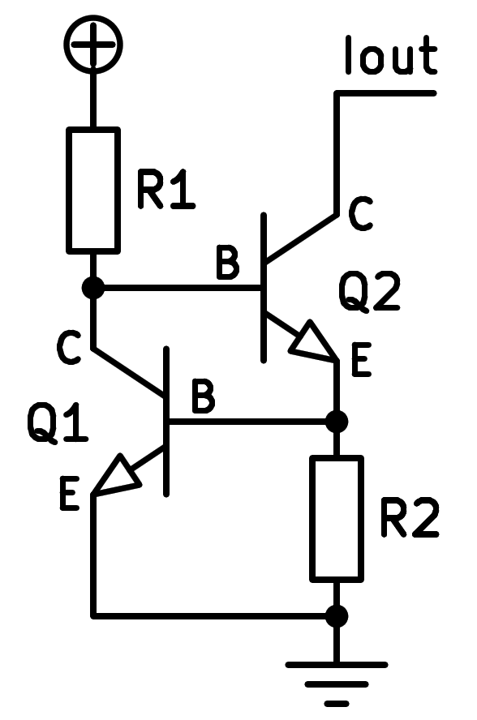
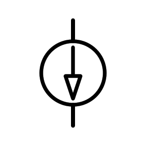

13. La font actual¶
Aquest circuit serveix per generar un corrent que es mantindrà constant, independentment de la tensió de la seva sortida. És un circuit àmpliament utilitzat per polaritzar altres etapes dels transistors, com ara la PAR diferencial, per alimentar diodes LED de corrent constant, enviar informació immune al soroll elèctric, etc.
{kind=link}

Esquema d’una font de corrent constant basada en transistors NPN.¶
{kind=link}

Símbol d’una font de corrent constant.¶
Funcionament i càlculs¶
La funció de cada component és la següent:
La resistència R1 polaritza la base del transistor Q2, que comença a conduir el corrent.
Quan condueix el transistor Q2, la tensió de la resistència R2 comença a augmentar, fins a aproximadament 0,6 volts, que és el moment en què el transistor Q1 comença a conduir.
Quan condueix el transistor Q1, el corrent de la resistència R1 s’escapa pel col·lector Q1 del transistor i deixa d’alimentar -se a la base de Q2.
El resultat final és que es manté una tensió pràcticament constant a la base de Q1 i, per tant, en resistència R2. Aquesta tensió constant es tradueix en un corrent de corrent circularà per l’emissor Q2 i, menyspreant el corrent base, pel col·lector Q2.
Aplicant la llei d'Ohm:
Ser:
I_r2 = corrent que circula per la resistència R2 en amplificadors [a]
V_BE = Tensió entre la base i l'emissor del transistor Q1 en volts [V]
R_2 = R2 Resistència en ohms [ω]
Simulació¶
A continuació, es pot veure la simulació d'una font de corrent constant basada en transistors NPN.
Exercicis¶
Dibuixa un esquema simplificat d’una font de corrent constant basada en transistors NPN.
Dibuixa al costat del símbol de la font de corrent constant.
Dibuixa un esquema realista d’una font de corrent constant basada en transistors NPN, que s’alimenta de resistència.
Quina és la funció principal d’una font actual? Quines aplicacions teniu?
En la simulació de la font de corrent constant podem verificar com afecten els canvis externs.
Canvieu la tensió d’alimentació de 9 volts a 18 volts en passos de 3 en 3 volts i notes en una taula com varia el corrent pel col·lector del transistor amb el canvi de tensió d’alimentació.
En la simulació de la font de corrent constant podem verificar com afecten els canvis externs.
Amb una tensió d’alimentació de 9 volts, la resistència R3 canvia per als 2000Ω, 1000Ω, 100Ω, 10Ω. Escriviu en una taula quant val el corrent del col·leccionista per a cadascun dels valors de resistència.
Dissenyeu una font de corrent constant que funcioni amb un voltatge d’alimentació de 12 volts i amb un flux de col·leccionistes de 10 mil·límetres.
Per aconseguir -ho, canvieu la tensió d’alimentació a 12 volts i calculeu la resistència R2 necessària amb la fórmula:
Sense utilitzar decimals per al valor de resistència.
Disseny al Circuit Simulator Una font de corrent negativa constant. La forma del circuit serà la mateixa que la font simulada anterior, però utilitzant transistors PNP i connectant el circuit de miralls horitzontals. És a dir, la resistència R1 estarà connectada al negatiu de la bateria i la resistència R2 es connectarà al positiu de la bateria.